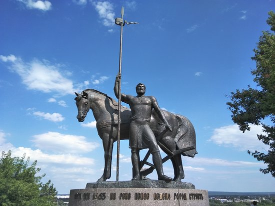

Город-крепость Пенза основан в 1663 году при царе Алексее Михайловиче.В 1781 г. Пенза и губерния получают утверждённый герб – в зелёном поле три снопа: пшеничный, ячменный и просяной.
Они означают богатство и земледелие земли.9 сентября 1801 г. Пенза была объявлена губернским городом.Пенза находится в центре европейской части России.
Город располагается на обоих берегах реки Суры.
Площадь города 305 км². Средняя высота над уровнем моря составляет 174 м. Наивысшая точка (280 м над уровнем моря) находится на холме Боевая гора, вытянутом с ЮЗ на СВ наподобие гряды. Самая низкая – 134 м. Протяжённость города с севера на юг – 19 км,
с запада на восток – 25 км.Пенза разделена на четыре городских района:
Железнодорожный – 114 572 чел.,
Ленинский – 91 817 чел.,
Октябрьский – 183 160 чел.,
Первомайский – 134 004 чел.
В Пензе насчитывается 10 площадей, 532 улицы, 38 переулков, 391 проезд, 2 проспекта, 3 набережные. Общая протяжённость улично-дорожной сети
составляет 713 км.Численность населения города Пензы на 2018 год составляет 523 553 человека.
